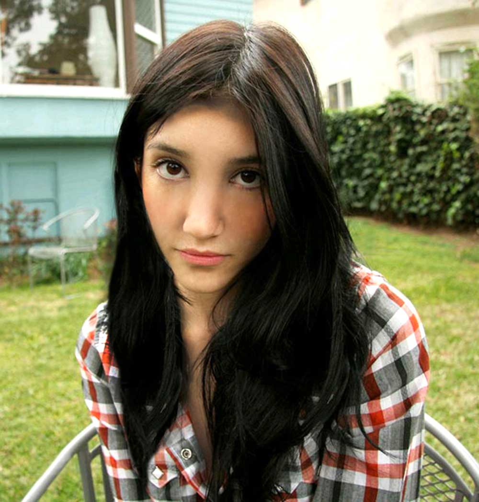

Zadatak je bio napraviti vlastiti font. Ja sam koristila fontforge. Funkcionira kao i Bezierove krivulje u Illustratoru. Jedino što moramo još spremiti i instalirati font na računalo.
Zadatak je bio napraviti dvije različite krivulje. Napisali smo inicijale našeg imena pomoću fonta koji smo napravili u prethodnoj vježbi. Zatim napravili clipping mask.
link na pdfZadatak je bio pomoću raznih alata napraviti cvijet. Kopirali smo neke dijelove, a zatim ih pomoću rotate toola jednostavno prenijeli na mjesta. Radili smo na transparentosti boja. Stvarali smo nove color swatcheve.
link na pdfZadatak je bio napraviti čašu, a kasije i vlastiti predmet. Trebali smo napraviti sjene i osvjetljenja na određenim dijelovima, izrezati objekte iz objekata i slično.
link na pdfZadatak je bio retuširati dvije fotografije. Na jednoj smo pomoću različitih alata uklonili greške pa onda klonirali dio kose djevojke. Na drugoj smo maknuli pjegice i "smoothali" lice djevojci.
Zadatak je bio kolorirati vlastitu fotografiju u 5 primjeraka s najmanje 3 boje na svakom primjerku. Priložiti ću samo jedan primjerak gdje se jasno vidi koje sam dijelove kolorirala iz crno bijele fotografije mene.
Zadatak je bio izabrati neku od ponuđenih fotografija kao bazu, zatim izabrati još nekoliko ponuđenih fotografija, sa njih izrezati neke objekte i zalijepiti na bazu, te po svom izboru izabrati jos neke elemente i uklopiti ih u tu fotografiju. Podesiti boje i poraditi na realističnosti fotografije.
Zadatak je bio napraviti gif. Dobili smo video iz kojeg smo trebali exportati jedan frame, dio framea napraviti transparentnim u npr. Photoshopu, zatim ga vratiti u npr. Shotcut i spojiti video i transparentnu masku.

Zadatak je bio u nekom programu za editanje videa ubaciti zvuk, videe i tekst, primjeniti filtere, izrezati i posložiti kako treba.